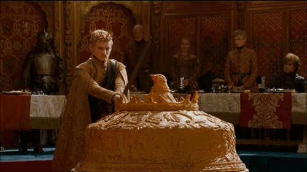

These handheld chicken pies were made in honor of the pigeon pie served at the infamous Purple Wedding on the show Game of Thrones. Juicy chunks of chicken and vegetables are baked into flaky pie crust in individual size muffin tins. It’s effortless, perfect comfort food.
